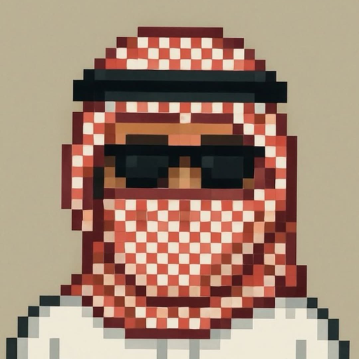
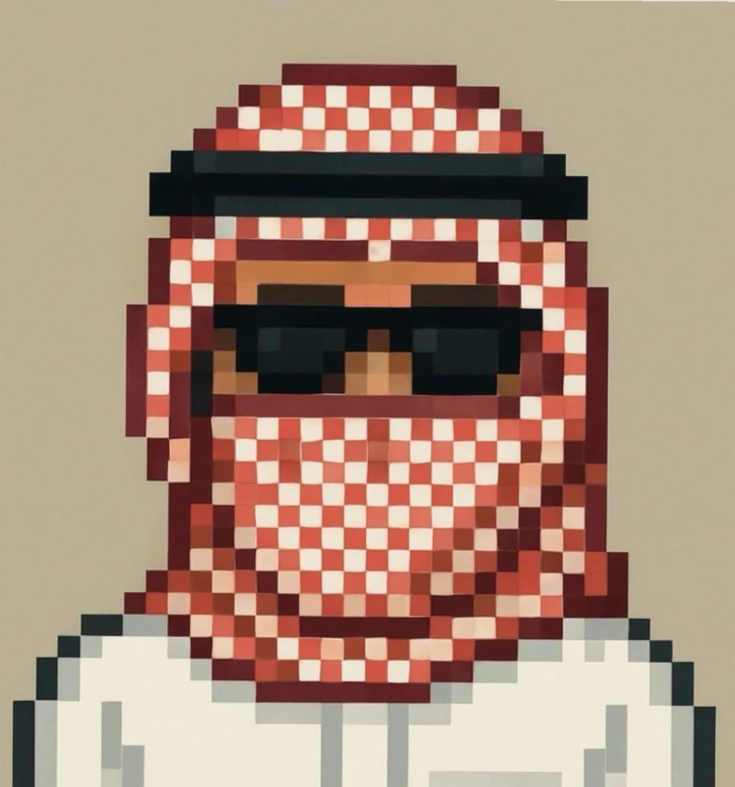

EXP_001
Sudoku Generator
A browser-based 9×9 Sudoku experiment with difficulty levels, highlighting, number input and puzzle generation.

Ali BasalehCYBER SECURITY / WEB DEVELOPMENT / GLASGOW
I break things to understand them, then build them back better. Security, code, digital forensics and whatever I’m curious about next.

I like knowing what’s happening underneath the screen.
That means pulling apart how systems work, testing things in controlled environments, following digital evidence, learning networks and building websites from a blank file.
I’m interested in the overlap between security and making things — understanding where software fails is useful when you’re trying to build it properly.
No fake case studies. Coursework, experiments and projects I’ve worked on while learning.
WEB / DESIGN / DEVELOPMENT
SECURITY TESTING
FORENSICS
RESEARCH
SECURITY STRATEGY
THE MESSY DESK
Not everything needs to be a polished case study. This is where half-finished ideas, coursework demos and things I built just because I wanted to see if I could live.
A browser-based 9×9 Sudoku experiment with difficulty levels, highlighting, number input and puzzle generation.
The alternate mode on this portfolio. A front-end experiment in changing an entire visual system without reloading the page.
Small exercises around evidence handling, examination, timelines and documenting what happened.
Controlled demos for understanding web security concepts, misconfigurations and how defensive fixes change behaviour.
Buttons, navigation ideas, layouts and interactions that never became full websites. Good ideas don't always need a client.
// experiments can be unfinished. that's kind of the point.